Spam is really a problem if you have a WordPress blog, a forum or a guestbook. A very common approach to solve this problem are CAPTCHAs - Completely Automated Public Turing test to tell Computers and Humans Apart.
The idea behind CAPTCHAs is to give the spammer a problem which is hard to solve for a computer program but easy to solve for a human.
Most CAPTCHAs are really boring. I tried to find different categories of them, but most you will find online are in the "Optical character recognition" category:
Optical character recognition
{kind=link}
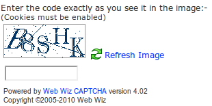
I hope nobody seriously pays the 6 Euro for Web Wiz. As many very simple CAPTCHAs it lacks a support for blind people. It is quite easy to read for humans, but I guess also for bots. They always use only five random characters which are written in blue. They added some dots and straight lines to make segmentation more difficult. I guess they never tried to hack their own CAPTCHA. If they did, they should be aware that those small dots don't change anything and the straight lines can easily be detected and removed. It also seems to me as if they only used one font.
Google did some great work with reCAPTCHA. I think I'll write a longer post about this later, but to keep it short:
- They use the reader (or spammer) to digitize the books they scan. So if someone uses very good algorithms to bypass their CAPTCHA, the spammer will help Google. This is a very nice way to end up in a win-win situation, isn't it?
- reCAPTCHA has also support for blind people.
- The characters you have to type in are actual words. This makes it a lot easier for humans to recognize the characters.
- reCAPTCHA is very easy to use. No need of GD or ImageMagick.
- If you can't read it, just reload it.
Here is a screenshot of reCAPTCHA:
{kind=link}
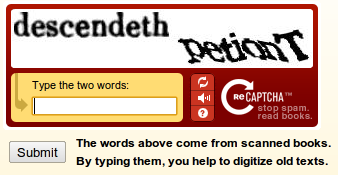
Here is another "traditional" CAPTCHA example.
{kind=link}
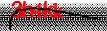
KittenAuth
I have never seen a working demo of KittenAuth, but the idea is simple: You get 9 pictures and you're supposed to spot the cats:
{kind=link}
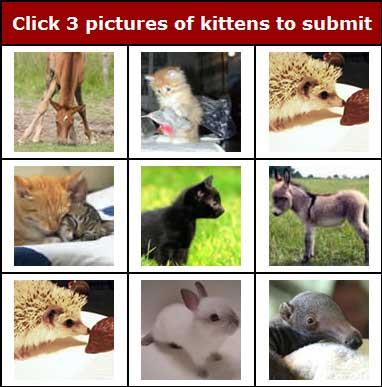
Very similar is ASIRRA:
{kind=link}
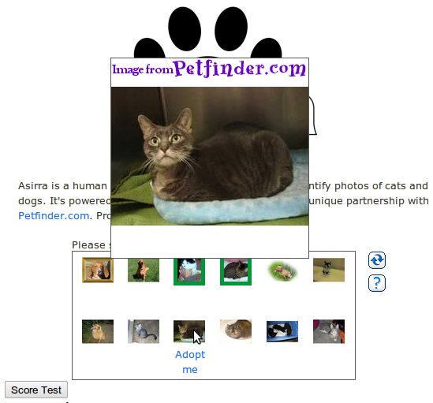
Basic human knowledge
Another CAPTCHA-type is based on basic human knowledge. Text CAPTCHA is an example for this type. They ask you questions like:
- Which of milk, hotel or brain is a body part?
- How many letters in "devotional"?
- The word "tamers" has which letter in 2nd position?
- Enter the smallest number of 28, thirteen, twenty, 60, fifty six or 78:
- Which of knee, leg, ear or ankle is above the waist?
I don't think this type is very good as the spammer has to do almost the same amount of work as the programmer. He has to parse the different types of questions, but I guess this isn't too hard.
He might just ask Google: what is 7 minus 3 times 2? or what is the number of horns on a unicorn times the answer to life, the universe, and everything?.
{kind=link}
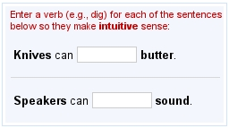
Mathematics
I've seen some CAPTCHAs asking for very basic math questions like the following one. They are very easy to bypass if you want to write a bot:
{kind=link}
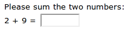
Sometimes they are not that easy:
{kind=link}
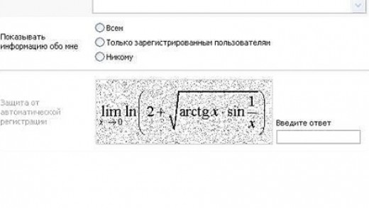
{kind=link}
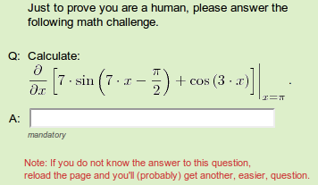
Social CAPTCHA
I've just found Facebook's social CAPTCHA. I didn't read the article. I guess the idea is that you know the name of your friends, but a stranger doesn't. I had the same idea for a school website where you would have been forced to know the name of the teachers. Here is the example:
{kind=link}
PLAYTHRU
To get through this CAPTCHA, you have to play a short game.
{kind=link}
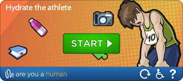
{kind=link}
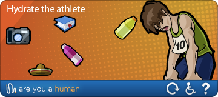
You can get PLAYTHRU here.
Further reading
- Fun:
- Free CAPTCHA systems:
- reCAPTCHA: I recommend this one.
- cool php captcha
- Fight with Spam: 15+ Free Captcha Solutions
- Breaking or creating CAPTCHAs:
More in this series
In this series about application security (AppSec), we already explained some of the techniques of the attackers 😈 and also techniques of the defenders 😇:
- Part 1: SQL Injections 😈🐝
- Part 2: Don’t leak Secrets 😇
- Part 3: Cross-Site Scripting (XSS) 😈🐝
- Part 4: Password Hashing 😇
- Part 5: ZIP Bombs 😈
- Part 6: CAPTCHA 😇
- Part 7: Email Spoofing 😈
- Part 8: Software Composition Analysis (SCA) 😇
- Part 9: XXE attacks 😈🐝
- Part 10: Effective Access Control 😇
- Part 11: DoS via a Billion Laughs 😈
- Part 12: Full Disk Encryption 😇
- Part 13: Insecure Deserialization 😈🐝
- Part 14: Docker Security 😇
- Part 15: Credential Stuffing 😈🐝
- Part 16: Multi-Factor Authentication (MFA/2FA) 😇
- Part 17: ReDoS 😈
The following articles are about to come:
- Part 18: Secure Messaging 😇
- Part 19: Cryptojacking 😈
- Part 20: Backups 😇
- Part 21: Cryptotrojans 😈
- Part 22: Single-Sign-On 😇
- Part 23: Clipboard Hijacking 😈
- Part 24: Certificates 😇
- Part 25: Race Condition Attacks in Blockchains 😈
- Part 26: Mobile Device Management (MDM) 😇
- Part 27: Server-Side Request Forgery (SSRF) 😈
- Part 28: Network Separation 😇
- Part 29: Social Engineering (including Phishing) 😈
- Part 30: Virtual Private Networks (VPNs) 😇
- Part 31: CSRF 😈
Let me know if you are interested in more articles around AppSec / InfoSec!